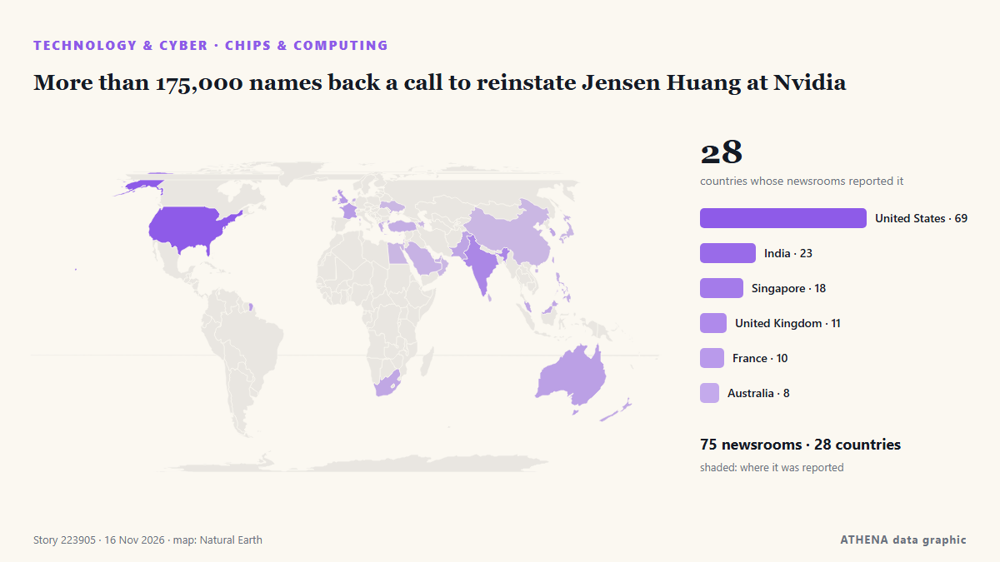

More than 175,000 names back a call to reinstate Jensen Huang at Nvidia

An open letter asking Nvidia’s board to bring back Jensen Huang had more than 175,000 names on Monday, four days after he resigned as chief executive. de The Next Web
Ce qui a changé 51 nouveaux reportages de 39 médias ces 24 dernières heures.
Voir les sources ›Preuves: Solides
Relayé de façon indépendante par 75 médias dans 28 pays depuis le 11 nov. ; premier à l'annoncer : Stuff ; la couverture est à son pic. ATHENA juge le risque accru (4.0/10), surtout en raison de la gravité des dommages décrits et de sa portée géographique et sectorielle. La confiance est de 87 % (élevée) : 75 médias indépendants le confirment, avec une fiabilité moyenne des sources de 73 %. Médias par pays : États-Unis (13), Inde (4), Royaume-Uni (3). Couverture : du 11 nov. au 16 nov., 126 heures.
Pourquoi c'est important: Les évolutions technologiques et cyber façonnent la sécurité, la concurrence et les règles de la vie numérique.
Ce qui a changé : 51 nouveaux articles de 39 rédactions dans les 24 heures jusqu'au 16 nov..
Premier titre : How Nvidia CEO Jensen Huang's extramarital affair could cause collateral damage in Washington
AutomatiséSélectionné, regroupé et noté selon la méthode publiée d'ATHENA à partir de 29 médias indépendants. Le titre est celui du média ; les phrases d'ATHENA suivent des modèles fixes - aucune IA générative ne les rédige. Comment ça marche →
Comment lire cette page
- Ce que vous lisez
- 75 médias dans 28 pays ont rapporté cet événement. Les reportages ci-dessous sont classés selon leur ordre de parution ; chaque titre ouvre l'article original. ATHENA n'écrit aucun reportage.
- Notre lecture
- Pour mémoire — Les reportages décrivent une affaire terminée, intérieure, commerciale ou personnelle. Nous la consignons pour que vous voyiez qui l'a rapportée et quand. Nous ne suivons pas ici de risque de conflit plus large.
- Quelle base de preuves
- Solide De nombreux médias indépendants, dans de nombreux pays, décrivent le même événement.
Après retrait des doublons, des éléments hors sujet et périmés, 26 des 40 reportages listés sont retenus ; 92 % des titres correspondent à l'événement.
- Ce que cela ne veut pas dire
- ATHENA mesure la façon dont un événement est rapporté, pas sa véracité. Ce n'est ni une prévision, ni un jugement sur qui a raison, ni un conseil.
- Ce qui la changerait
- Des reportages d'autres médias indépendants montrant une évolution différente, ou une confirmation ou un démenti ferme d'une source officielle.
Lecture R2 · actualisée à chaque mise à jour de cette page. ATHENA n'a pas encore publié de bilan de ces lectures ; il sera lié ici le moment venu.
En un coup d'œil
Sélectionné, noté et rédigé par la méthodologie publiée d'ATHENA. Aucun rédacteur n'intervient sur un événement en particulier. Comment il est produit ›
| 11 Nov 05:30 UTC | 1 |
|---|---|
| 11 Nov 11:30 UTC | 0 |
| 11 Nov 17:30 UTC | 0 |
| 11 Nov 23:30 UTC | 0 |
| 12 Nov 05:30 UTC | 0 |
| 12 Nov 11:30 UTC | 2 |
| 12 Nov 17:30 UTC | 10 |
| 12 Nov 23:30 UTC | 10 |
| 13 Nov 05:30 UTC | 15 |
| 13 Nov 11:30 UTC | 22 |
| 13 Nov 17:30 UTC | 15 |
| 13 Nov 23:30 UTC | 5 |
| 14 Nov 05:30 UTC | 6 |
| 14 Nov 11:30 UTC | 14 |
| 14 Nov 17:30 UTC | 7 |
| 14 Nov 23:30 UTC | 11 |
| 15 Nov 05:30 UTC | 16 |
| 15 Nov 11:30 UTC | 16 |
| 15 Nov 17:30 UTC | 19 |
| 15 Nov 23:30 UTC | 13 |
| 16 Nov 05:30 UTC | 7 |
| 16 Nov 11:30 UTC | 6 |
| 14 Nov 16:52 UTC | 2.6 |
|---|---|
| 14 Nov 17:33 UTC | 4.2 |
| 16 Nov 14:52 UTC | 4.0 |
Pourquoi ces chiffres
Importance
L'ampleur et la visibilité de la couverture de l'information.
Risque
Ce que décrivent les reportages, noté selon le dommage possible. Ce n'est pas une prévision.
Confiance
Dans quelle mesure des médias indépendants étayent l'information.
La couverture : qui l'a annoncé, et quand
titre tel que publié · ouvre l'original- Stuff · Nouvelle-ZélandeHow Nvidia CEO Jensen Huang's extramarital affair could cause collateral damage in Washington
- Inc. · États-UnisNvidia’s Stock Is Swinging on Its CEO’s Private Life. That’s a Warning for Every Founder-Led Business
- New York Times Business · États-UnisJensen Huang’s Resignation From Nvidia Could Complicate Billions in Philanthropic Giving
- Evening Standard (London) · Royaume-UniVolatile trade as Nvidia chief executive Jensen Huang resigns
- The Straits Times · SingapourWhite House weighs Commerce Secretary Lutnick’s ouster amid Nvidia export concerns, sources say
- Fortune · États-UnisAfter Jensen Huang is Howard Lutnick the prime target of national security inquiry?
- Business Insider · États-UnisHouse Foreign Affairs chair: 'Very likely' chips restrictions make it into defense bill
- Inc. · États-UnisWhat Happens to Nvidia Now? 3 High-Stakes Tests Will Decide Its Future
- France 24 English · FranceWhite House reportedly discussing Howard Lutnick's future as Commerce secretary
- Forbes Business · États-UnisLutnick Should Testify ‘ASAP’ About Nvidia And Huang, GOP Sen. Jim Banks Says
- The Hill · États-UnisJim Banks calls for Lutnick to testify on Nvidia CEO controversy, alleging 'loophole' use
- The Independent · Royaume-UniTrump team mulling Howard Lutnick’s future as commerce secretary after Nvidia scandal, report says
- France 24 English · FranceJensen Huang resigns as Nvidia CEO after mounting scandals
- CBS News (World) · États-UnisCritics say Lutnick failed to cut off diversion of Nvidia chips to China
- Financial Times - Global economy · Royaume-UniUS lawmakers pile pressure on Lutnick as Nvidia scandal widens
- Arab News · Arabie saouditeWhite House weighs Commerce Secretary Lutnick’s ouster amid Nvidia export concerns, sources say
- The New York Times (World) · États-UnisHoward Lutnick Took Softer Line on Nvidia as Calls for Tougher Controls Grew
- New York Times Business · États-UnisHuang and Lutnick Summoned to Testify Before Congress
- The Business Times · SingapourNvidia sends a painful message on how to value a CEO
- Free Malaysia Today · MalaisieUS Senate Banking Committee chair calls on Jensen Huang, Lutnick to testify
- DigiTimes Asia · TaïwanLutnick's clash with Treasury over Nvidia chip curbs deepens as White House weighs his future
- Deccan Herald · IndeJensen Huang, Howard Lutnick summoned to testify over Nvidia-China row
- Deccan Herald · IndeLutnick took a softer line on Nvidia as calls for tougher controls grew
- Business Insider · États-UnisThe Jensen Huang scandal is casting a shadow over data centers halfway across the world
- Express Tribune · PakistanNew allegations adds third woman to Jensen Huang’s growing scandal hours after he resigned
- NDTV · IndeDay Before Jensen Huang's Resignation, Trump Urged Him To Fight For His Job
- ProtoThema English ·Nvidia scandal reaches Trump administration as Congress summons Huang and Lutnick over China espionage claims
- Free Malaysia Today · MalaisieSingapore charges fifth person as Nvidia case expands
- DigiTimes Asia · TaïwanCommentary: From industry definer to industry participant? Nvidia's 2035 outlook in post-Jensen Huang Era
- Rappler · PhilippinesHuang exit, US scrutiny imperil $3 billion in Chinese AI projects reliant on Nvidia
- NDTV · IndeHoward Lutnick May Lose His Position In Team Trump Amid Nvidia's China Link: Report
- The Business Times · SingapourJensen Huang exit, US scrutiny imperil US$3 billion in Chinese AI projects reliant on Nvidia
- France 24 English · FranceFallout from Nvidia scandal spreads as Huang resigns
- Tom's Hardware · États-UnisMass smuggling of up to 1.5 million Nvidia AI GPUs could be the underlying cause of Jensen Huang's departure, analysts claim
- Türkiye Today · TurquieThe king is gone. Nvidia still holds the chips
- The Korea Times · Corée du SudUS Commerce Secretary Lutnick to testify before Congress on Nvidia: US media
- Gulf News · Émirats arabes unisHuang fallout far from over: Nvidia stock flat, flowers at the gate, earning looms
- Business Insider · États-UnisWhy Jensen Huang's Nvidia scandal has everyone quoting Warren Buffett and Charlie Munger
- China Daily — page reader · ChineChina opposes abuse of export controls on computing power
- The Next Web · Pays-BasMore than 175,000 names back a call to reinstate Jensen Huang at Nvidia